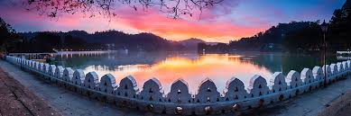

Kandy Lake
Dominating the town is Kandy Lake. A leisurely stroll around it, with a
few stops on the lakeside seats, is a pleasant way to spend a few hours,
although
monoxide-spurting buses careening around the southern
edge of the lake can mar
the peace somewhat. The nicest part to walk along
is the area around the Temple
of the Sacred Tooth Relic.
"
style="width:100%" onmouseover="myFunction(this);" >

![<b>The Temple of the Sacred Tooth Relic</b>
<br><p>The Temple of the Sacred Tooth Relic is one of the most important <br>shrines of Sri Lanka.
Also named as Dalada Maligawa, this temple<br> is based in the royal palace of the Kingdom of
Kandy.Housing the legendary<br> Budda tooth, the temple is a World Heritage site though very<br>
little are the remnants of the original temple built around 1600.<br> Amazing ornamentation
with golden fence and extravagant Canadian <br>architecture makes it a blissful sight for
the visitors.<br><br><br></p>](Kandy2.jpg)
![<b>Pinnewala Elephant Orphanage </b>
<br><p>A peaceful sanctuary or an exploitative tourist trap? This is the <br>conundrum at
the centre of the debate about Sri Lanka's Pinnawala<br> Elephant Orphanage.Tourists who
do some research often end up <br>wondering whether they should visit the Pinnawala Elephant
Orphanage.<br> Ethical travellers want to support animal welfare projects and see examples
<br>of positive change. But can conservation and chains go hand-in-hand?<br> Because this is
what you seem to get here.<br><br><br></p>](orphanage.jpg)

![<b>Kandy Esala Perahera</b>
<br><p>The Kandy Esala Perahera, one of Sri Lanka’s most famous<br> religious festivals,
takes place every year in the hill-capital Kandy,<br> in the full-moon month of Esala
coinciding with July/August.<br>Held to seek blessings for a good harvest from the deities,
<br>ten days of increasingly frenetic activity culminate in an ancient,<br> awe-inspiring
procession that for centuries has drawn religious devotees, <br>and more recently tourists,
to Kandy’s narrow hill-streets.<br><br><br><br><br></p>](perahera.jpg)